KeyBank
A half-day Design Thinking 101 workshop for KeyBank corporate center interns — taking them from branch observation through affinity mapping, journey mapping and structured ideation on a live business problem.
KeyBank stakeholders asked us to introduce corporate center interns to the fundamentals of design thinking. The obvious version of that request is a slide deck about the double diamond. We did something else: we gave them a real, unsolved KeyBank problem and made them work it.
How might we provide a better client experience both in-branch and via the drive-thru window during a simple teller transaction?
THE PROBLEM STATEMENT THE INTERNS WERE HANDEDA half day is not much time. Discovery alone can eat a week, and a group that has never done this before will spend most of its energy just working out what is being asked of them. The design decision that made the day possible was moving discovery out of it entirely.
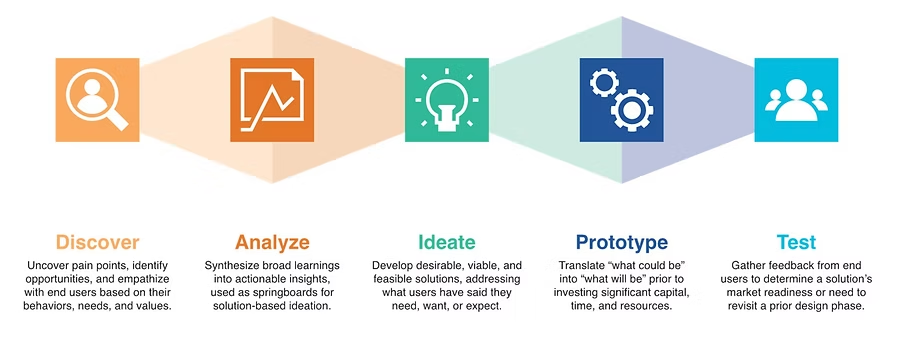
We ran a virtual session a week ahead of the in-person day. Interns got the problem statement, an assigned branch, and the two research methods they'd be using. Then they went and did fieldwork on their own time.
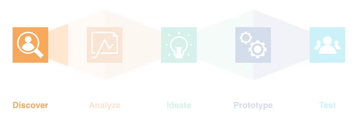
Each intern conducted a contextual interview with their branch manager and completed A.E.I.O.U. observations of real clients, in the lobby and at the drive-thru. They were given the worksheets below so twelve people collecting data independently would come back with something that could actually be compared.
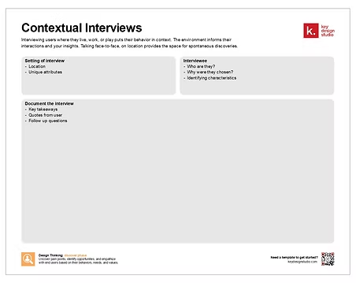
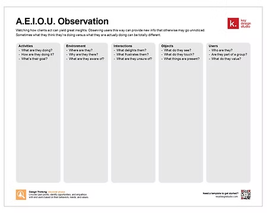
Twelve interns at twelve different branches is a real sample. That's the part that made the in-person day work — the group arrived with firsthand evidence rather than assumptions, and no one had to be convinced the problem was real.
I opened with a full-group circle — name, what they were studying, relevant experience, and one thing people wouldn't guess about them — then walked the agenda.
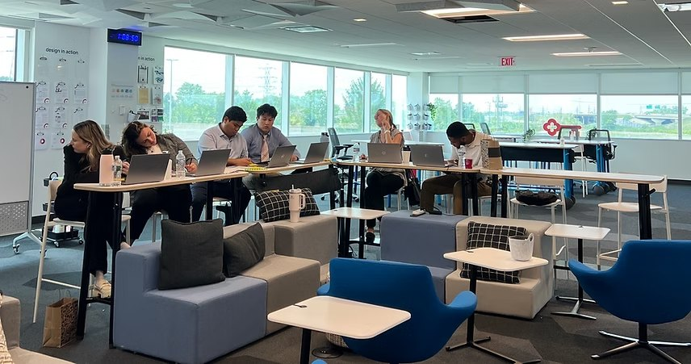
Before any real work, a three-minute warm-up: sketch the process of making toast. It looks like a throwaway icebreaker and it isn't. Twelve people draw twelve different things — some draw a toaster, some draw a wheat field, some draw a stick figure being disappointed. The point lands without anyone having to say it: the same task looks completely different depending on where you start looking.
It also gets pens in hands and gets the first bad drawing out of the way, which matters for a group about to spend three hours writing on sticky notes in front of each other.
Each intern had a few minutes to share the biggest takeaways from their branch. Twelve short reports, and the group immediately started noticing where their experiences diverged — which became the raw material for everything after.
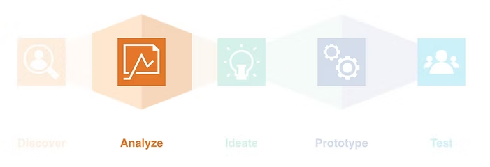
I introduced affinity mapping as the method for getting from a large pile of qualitative observations to a small number of themes. One idea per sticky note, group them collaboratively, name each cluster, then dot-vote the top three pain points to carry into journey mapping.
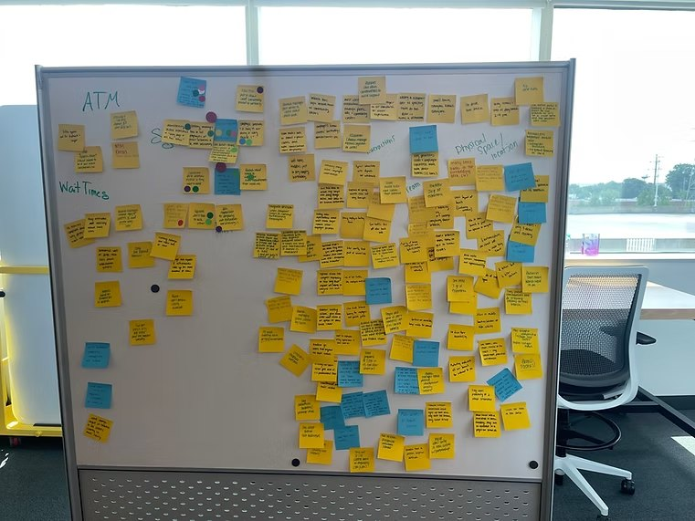
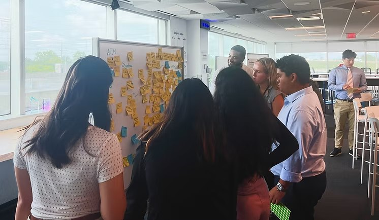
Themes are useful but they're static. To see the experience as something a client moves through, the group built two journey maps — one for in-branch, one for the drive-thru — and marked where the worst moments actually fell.
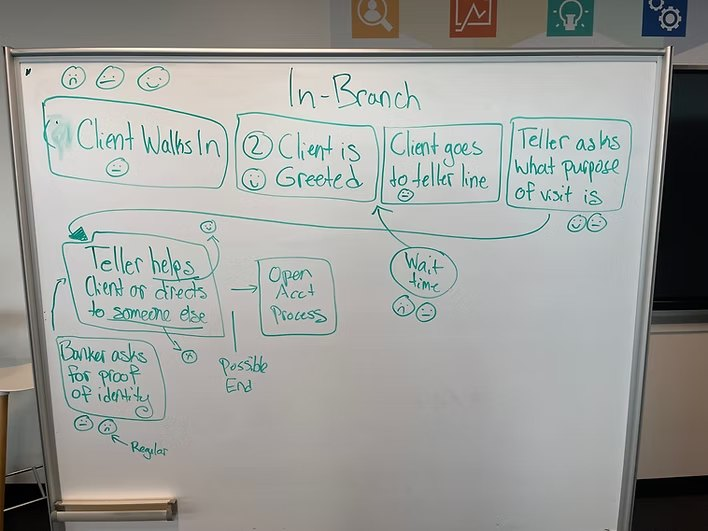
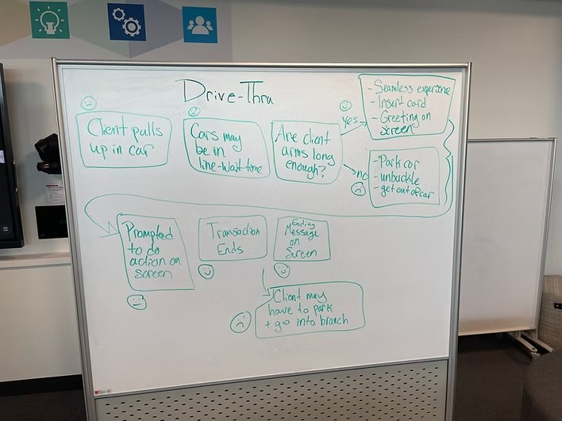
Running both maps side by side is what made the comparison possible. The same bank, the same simple transaction, two experiences that break in different places.
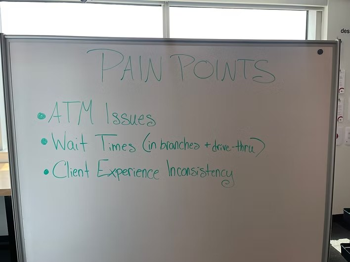
ATM issues, wait times across both channels, and inconsistency in the client experience from branch to branch. That third one is the interesting one — it only became visible because twelve people went to twelve different branches. A single team studying a single location could not have found it.
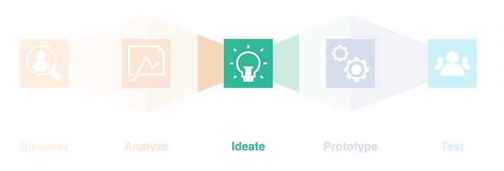
I ran 6-to-1: generate as many ideas as possible across six categories before evaluating any of them. The structure does one job, and it's the job that matters with a group new to this — it separates generating from judging, so nobody self-edits their way into silence. Six buckets also give people who freeze at a blank page somewhere concrete to start.
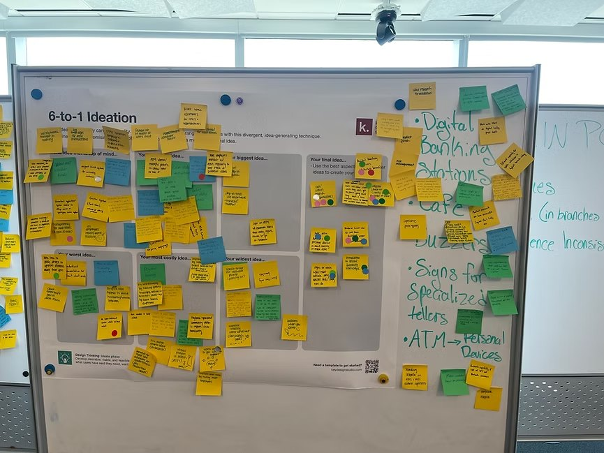
Then the group switched modes. Two dot votes each, top three ideas pulled, and a discussion of what each would actually take: feasibility, likely blockers, who would need to be involved, and who should own it. Ending on accountability rather than on a wall of sticky notes is what keeps a workshop from feeling like an exercise.
I recapped the arc from discovery through ideation, then asked each intern to write down what they'd do next if they had more time to keep going. They shared out to the group. It's a small closing move that makes the unfinished parts of the process visible instead of pretending a half day covered everything.
I sent a short survey the day after. Five of the twelve interns responded, so the numbers below are directional rather than conclusive — but the shape of the response is consistent and worth reading.
How would you rate each of the following parts of the workshop?
MEAN, 1–5 · n=5I enjoyed the affinity/journey mapping portion the most. I found this exercise to be extremely helpful in identifying the high and low points of a client interaction and capturing the feelings of them at the various stages. ON THE SYNTHESIS WORK
I liked being able to experience the creative process from start to nearly finish. It is also nice to think autonomously. I feel like I dont get to freely think, I am often told how I should do things, rather than being able to come up with my own solutions for problems. THE ONE I THINK ABOUT MOST
I think what surprised me the most was how vastly different each intern's experience was from branch to branch, with a few similarities here and there. ON WHAT SURPRISED THEM
I was surprised by how interactive it all was. I really enjoyed how engaging the workshop was! ON WHAT SURPRISED THEM
The ratings say something I didn't expect. Branch visits scored lowest at 3.8, while affinity mapping and journey mapping — the two activities built entirely out of what those visits produced — scored highest at 4.6 and 4.8. Fieldwork done alone, without a clear sense of what it feeds, feels like homework. The same data becomes compelling the moment it's on a wall next to eleven other people's. If I ran it again I'd close that loop earlier, maybe with a short mid-week check-in where interns see each other's raw notes before the in-person day.
Moving discovery out of the workshop is what made the workshop possible. A half day cannot hold research and synthesis and ideation. Pushing fieldwork a week upstream bought back the hours that the hands-on work actually needed, and it meant the group walked in with evidence instead of opinions.
Structure is what lets inexperienced groups produce real work. Every activity had a constraint — one idea per note, six categories, two dots each, three minutes to draw toast. None of that was decoration. Constraints are what let people who have never done this contribute confidently within minutes rather than waiting to be told they're doing it right.
And the comment about not usually getting to think autonomously is the one I keep returning to. These interns were capable of structured problem-solving the whole time. What they were missing was a format that asked them for it.